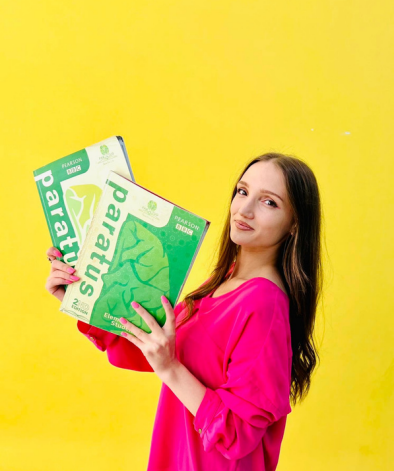

Մեր նշանաբանն է` ՊԱՏՐԱՍՏ ԿՅԱՆՔԻՆ
Պարատուս ուսումնական կենտրոնը կազմակերպում է դասընթացներ տարբեր տարիքային խմբերի համար
-

Միսս Վարդ
Միսս Վարդուհին չնայած իր երիտասարդ տարիքին կուտակել է այնպիսի փորձ ու հմտություններ, որոնք արժանի են լուսաբանման։
Ընկեր Վարդուհին ՝ Բարձրագույն կրթությունը ստացել է ՇՊՀ-ի անգլերեն լեզվի և գրականություն բաժնում, վերջինս ավարտելով՝ ստացել գերազանցության դիպլոմ📕
2019 թվականին ուսանողական փոխանակման ծրագրով եղել է 7 երկրի առաջավոր համալսարաններում🌎
Չեխիայում մասնակցել է Forum 2000 միջազգային կոնֆերանսին
Խորվաթիայում արժանացել է Youthpass միջազգային սերտիֆիկատի 🤩
Հեղինակ է 2 գիտական հոդվածի, որոնցից մեկը՝ The Impact of Coronavirus on English Word-stock թեմայով տպագրվել է Լոս Անջելեսում Միջազգային Scholink Պարբերականի Education, Societyand Human Studies ամսագրի 2-րդ հատորի 1-ին համարում:
Մինչ այժմ նախագահում է ՇՊՀ ուսանողական գիտական ընկերությունը։
2021 թվականից համարվում է Պարատուս թիմի անդամ։😍
💥 Իսկ թե մեծերին սովորեցնելու ի՞նչ հատուկ մեթոդներ է կիրառում Միսս Վարդը կհամոզվեք ինքներդ, եթե մեկ անգամ մասնակցեք մեր անգլերենի դասերին
@Vi Mour -

Միսս Սիրանուշ
Ընկեր Սիրանուշը մեր ամենաժպտերես և հոգատար ուսուցիչներից մեկն է։ 😇
Ընկեր Սիրանուշը`
✅ Միջին մասնագիտական կրթությունը ստացել է ՇՊՀ֊ի քոլեջի Թարգմանություն բաժնում,
✅ Բարձրագույն կրթությունը` ՇՊՀ֊ի Անգլերեն լեզու և գրականություն բաժնում,
✅ 2019 թ. վերապատրաստվել է որպես երիտասարդական աշխատող։
2021 թվականից համարվում է Պարատուս թիմի անդամ։😍
Սիրում է աշխատել փոքրիկների հետ։ 💛 Իր դասերը մշտապես անցնում են ինտերակտիվ ու հետաքրքիր մեթոդներով։ 👀 Paratus Վստահեցնում եմ,որ Միսս Սիրանուշի հետ երբեք չես ձանձրանա։🤩.
@Siran Khachatryan -

Ընկեր Հարոյան
Ընկեր Հարոյանը ռուսերենի ամենապահանջված մասնագետներից է։😇
Ընկեր Հարոյանը`
✅ Բարձրագույն կրթությունը ստացել Մ․Նալբանդյանի անվան պետական մանկավարժական համալսարանի Օտար լեզուների բաժնում,
✅ 1991թվականից մինչ օրս աշխատում է Գյումրու Ջ․ Բայրոնի անվան թիվ 20 հիմնական դպրոցում,
✅ Համագործակցում է Ռուսաստանի մշակույթի և գիտության կենտրոնի Գյումրու մասնաճյուղի հետ,
✅ «Մասնակցային դպրոց» կրթական հիմնադրամի Շիրակի մարզի ռուսաց լեզվի վերապատրաստման ուսուցիչ
✅ 2021 թվականից աշխատում է Պարատուս ուսումնական կենտրոնում:😍
Մանկավարժության 31 տարիների ընթացքում աշխատել է դիմորդների և մեդալակիրների հետ։🤩
Ունեցել է աշակերտներ, ովքեր ռուսաց լեզվի միջազագային օլիմպիադաներում զբաղեցրել են պատվավոր հորիզոնականներ։🤩
@Эгине Ароян -

Ընկեր Նարինե
Ընկեր Նարինեն մեր կենտրոնի ամենահոգատար և ամենաուշադիր ուսուցիչներից է։ 😇
Ընկեր Նարինեն՝
✅ Ավարտել է Մ․Նալբանդյանի անվան պետական մանկավարժական համալսարանի պատմաբանասիրական ֆակուլտետի հայոց լեզու գրականություն բաժին👩🎓
✅ 2006 թվականից սկսած աշխատել է որպես կրկնուսույց 👀
✅ Իր աշխատանքային տարիների ընթացքում ընկեր Նարինեն մշակել է 2 աշխատություն՝
1․«Ժամանակակից հայոց լեզվի զարգացման փուլերը
2․ «Հայոց լեզի և գրականության դասվանդման մեթոդիկան։Արտահայտիչ ընթեցանության կանոնակարգումը»
✅ 2019 թվականից համարվում է Պարատուս թիմի անդամ։😍
💥Ընկեր Նարինեն միշտ մշակում և կիրառում է ուսուցման ժամանակակից և հետաքրքիր մեթոդներ, որոնց շնորհիվ երեխաները գնահատում են գիտելիքի դերը իրենց կյանքում։
@Narine Torosyan -

Ընկեր Հարությունյան
Բոլոր հավասարումները ունեն լուծում, եթե այն սովորեցնում է լուծել ընկեր Հարությունյանը։
Ընկեր Հարությունյանը՝
✅ Ավարտել է Երևանի Պետական Համալսարանի կիրառական մաթեմատիկա ֆակուլտետը👩🎓
✅ 17 տարվա աշխատանքային փորձ ունի Գյումրու թիվ 40 դպրոցում
✅ 2013 թվականից մինչ օրս աշխատում է Ֆոտոն վարժարանում
✅ Ունի ուսուցչի առաջին աստիճանի տարակարգ 👏
Մանկավարժության 26 տարիների ընթացքում աշխատել է դիմորդների և մեդալակիրների հետ։🤩
💥Ընկեր Հարությունյանը միշտ փնտրում է ուսուցման հետաքրքիր և ժամանակակից մեթոդներ՝ անգամ անլուծելի խնդիրները դարձնելով հեշտ ու պարզ։
@Gayane Harutyunyan -

Ընկեր Շուշաննա
✅ Միսս Շուշանը բարձրագույն կրթությունը ստացել է ՇՊՀ-ի անգլերեն լեզվի և գրականություն բաժնում, վերջինս ավարտելով՝ ստացել գերազանցության դիպլոմ:
✅Եղել է անգլերենի ոչ ֆորմալ ակումբների ակումբավար, որոնց նպատակն է եղել անգլերենով շփման և հաղորդակցման հմտությունների զարգացումը:
✅ Ջինիշյան հիմնադրամում «Այլընտրանք »կրթական ծրագրի ղեկավար կազմի անդամ է եղել, որը զբաղվել է Ted_Ed կրթական վիդեո հոլովակների թարգմանությամբ:
✅ World Vision կազմակերպությունում զբաղվել է թարգմանչական գործունեությամբ:
✅ Մեր գործընկեր ITSpace Academy-իում ուսուցանում է ծրագրավորողների համար նախատեսված անգլերենի դասընթացներ։
✅ Վերապատրաստվել է English for Career Development կրթական ծրագրով>
@Shushellie Atoyan